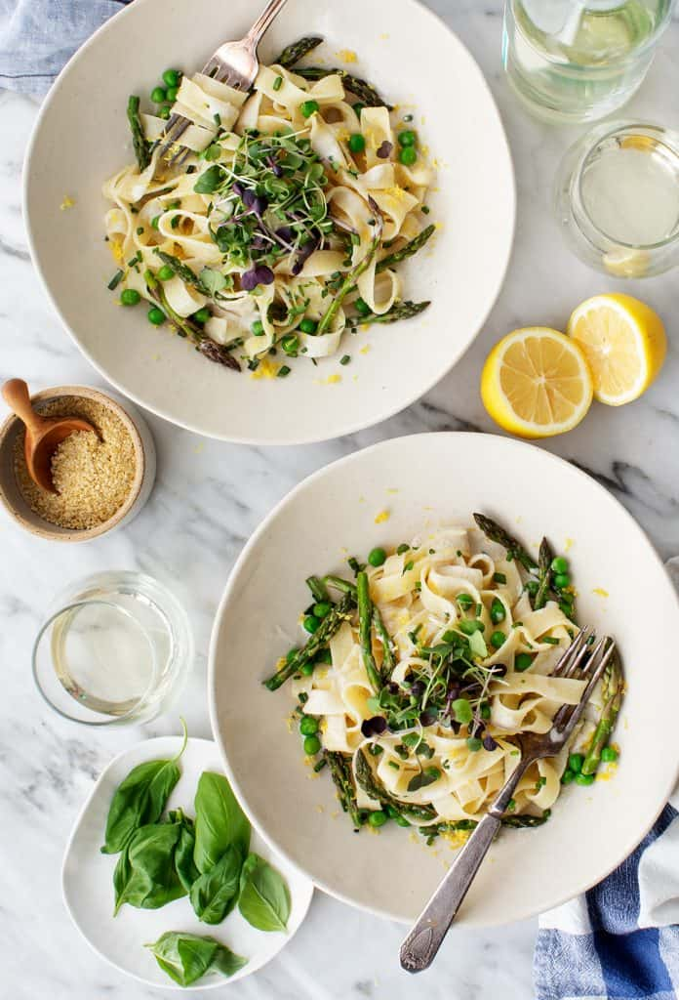

Tagliatelle

Ingredients:
- 12 ounces tagliatelle pasta
- 1 tablespoon extra-virgin olive oil
- 1 bunch asparagus, tender parts, cut into 1-inch pieces
- ½ cup peas
- 2 garlic cloves, grated
- Squeeze of lemon, plus zest for garnish
- ⅓ cup fresh tarragon, chopped
- ⅓ cup fresh chives, chopped
- ⅓ cup fresh basil or mint leaves
- Sea salt
- Microgreens, optional
- Freshly grated Parmesan or Vegan Parmesan
Light cashew cream sauce:
- ⅔ cup raw cashews
- ⅔ cup water
- 1 garlic clove
- 2 teaspoons fresh lemon juice
- 1 teaspoon Dijon mustard
- ½ teaspoon sea salt
Instructions
- Make the sauce: In a high speed blender, combine the cashews, water, garlic, lemon juice, mustard, and salt. Blend until creamy.
- Bring a large pot of salted water to a boil, and cook the pasta according to package directions until al dente.
- Heat the oil in a large skillet over medium heat. Add the asparagus and a few pinches of salt and sauté for 3 minutes, until the asparagus is just tender. Add the peas and garlic and stir. Turn off the heat and add a squeeze of lemon.
- Assemble bowls with the pasta, vegetables, sauce, herbs, lemon zest, and microgreens, if using. Serve with Parmesan or vegan Parmesan.